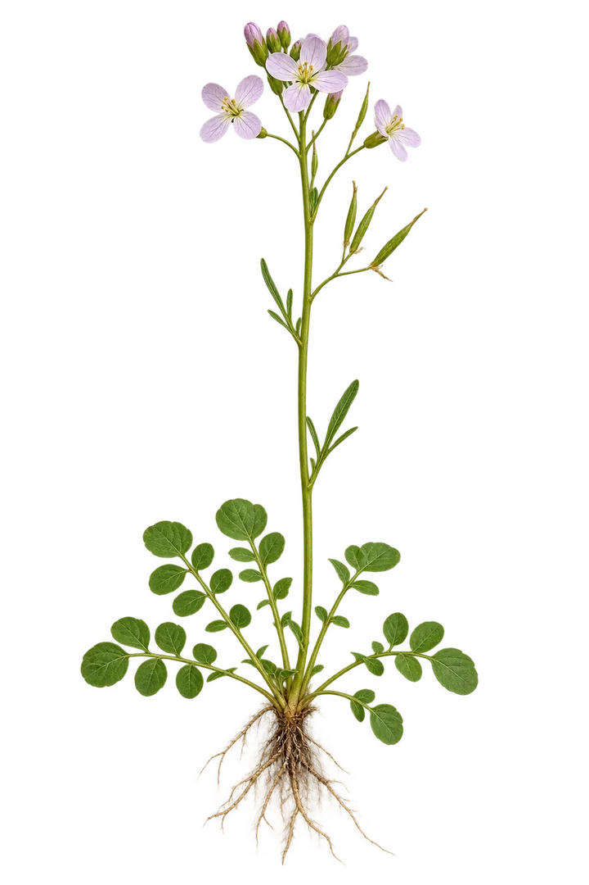
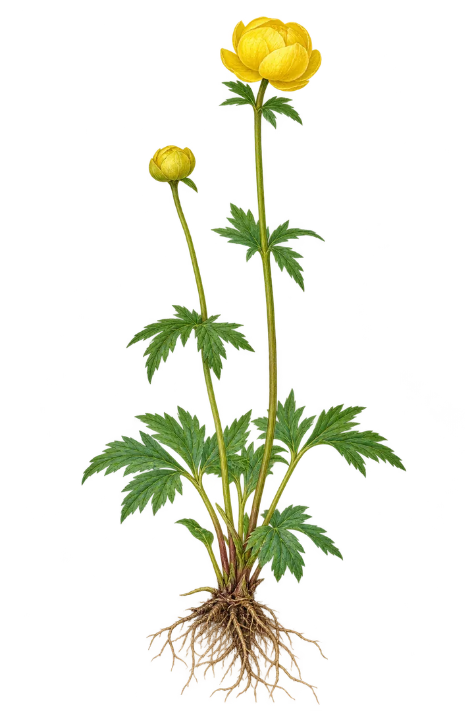
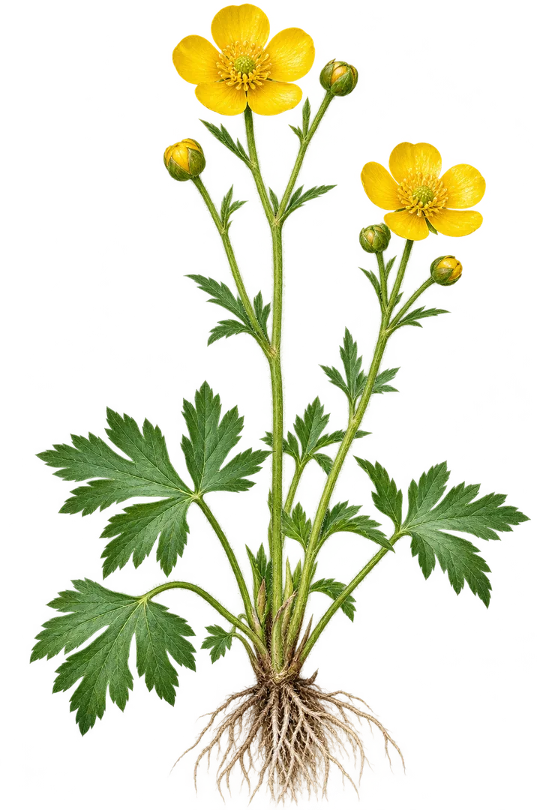

Engkarse
Cardamine pratensisOpprett blomsterstengel, fire kronblad, smale skulper og rundbladet rosett.
Kandidat v3 · artslikhet kontrollert
Tre individuelt reviderte botaniske WebP-illustrasjoner. Hver figur er vist på samme mørke bakgrunn som i Finn Flora. Den endelige publiseringen krever at appens mobil-, desktop- og fotoreservetester er bestått.

Opprett blomsterstengel, fire kronblad, smale skulper og rundbladet rosett.

Kuleformet gul blomst med overlappende begerblad og dypt flikete blad.

Opprett forgrenet stengel, fem glinsende gule kronblad og håndflikete blader.
Illustrasjonene skal brukes til læring, ikke som eneste grunnlag for sikker artsbestemmelse. Kontroller artskriterier, bildenes sjekksummer og referanser.
Åpne Finn Flora